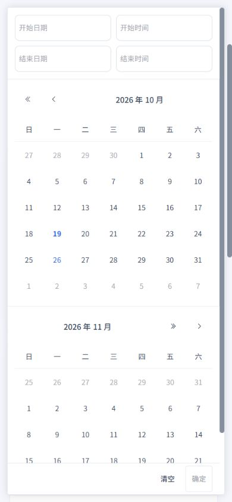
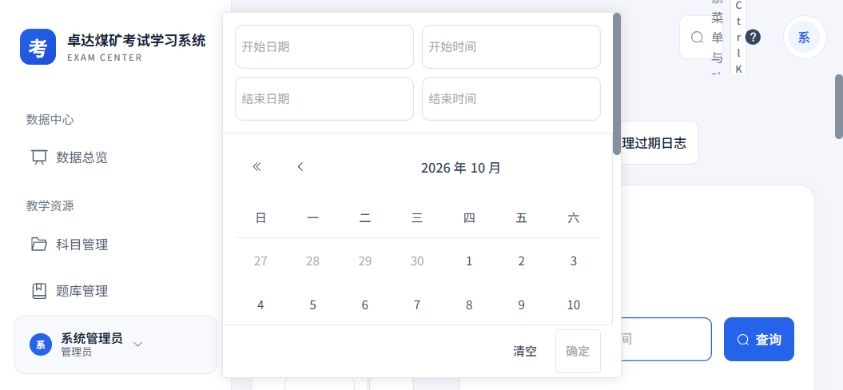

2026-10-19 · Workbuddy 01 · 本轮范围：科室管理、审计日志、登录日志
科室树、手机时间筛选与日志操作
延续白侧栏、浅灰蓝背景、蓝色操作和16 px圆角卡片，完善窄屏与横屏的可读性、触控和状态反馈。
本轮改动
- 科室树与上级科室选项的长名称完整换行；手机节点、展开与改名操作至少44 px。目录限定高度并内部滚动，收起后保留当前范围。
- 人数明确区分直属人员和已分配科室人员；统计加载失败单独重试，科室结构继续可用。编辑在异步校验及请求期间阻止重复提交和关闭，失败保留填写。
- 日志双日历在手机上下排列，保留日期与时分秒输入；浮层位于视口内，正文滚动、底部确认固定。320 px窄屏和844×390横屏均通过实测。
- 登录分析标明仅当前页，加载期间隐藏旧分析，失败不当作零记录。审计导出增加全选、部分选中、已选数量和空选校验；保留策略读取失败显示重试并暂时禁用清理。
沿用现有科室层级限制、接口、菜单权限、日志筛选、导出格式及清理确认规则。
截图与数据来源
前两张为实际页面组件配合隔离内存样例，仅核对长名称与层级布局，不连接业务接口。审计字段和日期截图来自实际本地应用，仅打开及操作筛选控件；没有执行清理、导出或保存。




验证
320×740、390×844、844×390与1440×900四种视口分别核对长科室名称样例和实际日志日期浮层，共8组测量。页面无横向溢出，长名称完整显示；日期浮层无内部横向溢出，确认区始终可见，手机日期单元格至少44×44 px。
5个相关测试文件、87项测试通过，覆盖统计失败重试、真实范围、上级防环、编辑重复提交与失败保留、审计策略重试、清理确认防重复以及导出字段选择；同时包含全站样式和设计覆盖检查。类型检查及生产构建通过。
测试和构建在本轮代码上执行；本报告仅记录上述三页的优化与验收。